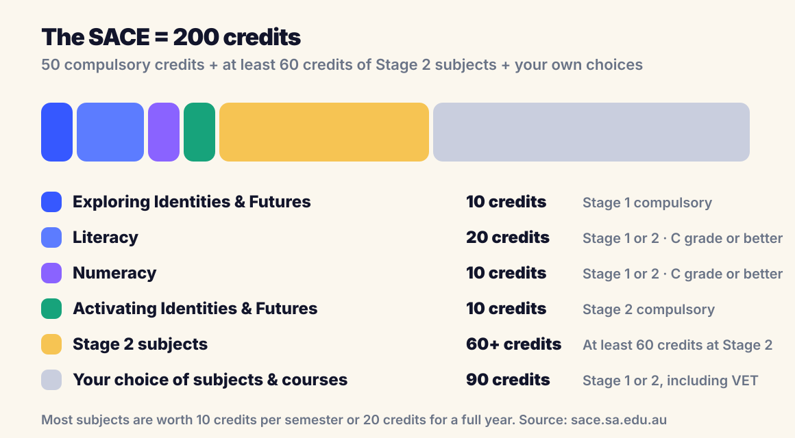
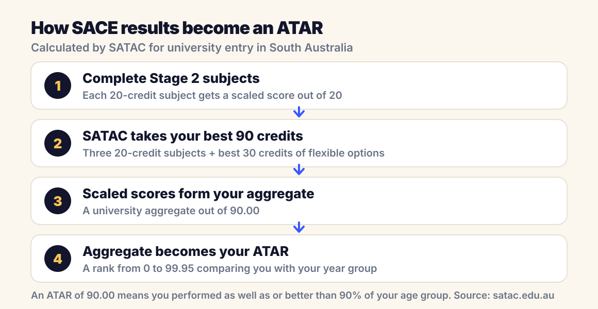

SACE & ATAR · South Australia
What is the ATAR and SACE? A plain-English guide for SA families

If you have a child heading into Year 11 or 12 in South Australia, two acronyms suddenly start deciding everything: SACE and ATAR. Schools tend to explain them in fragments. Here is the whole picture in one place, in plain English.
What is the SACE?
The SACE (South Australian Certificate of Education) is the certificate students earn by completing senior secondary school in SA. It is completed over two stages: Stage 1, usually in Year 11, and Stage 2, usually in Year 12. Each subject is worth credits: 10 credits for a semester subject, 20 credits for a full-year subject.
To earn the SACE, a student needs 200 credits, including some compulsory elements, with minimum grades: C or better for Stage 1 compulsory subjects, and C− or better at Stage 2.
What are the compulsory parts of the SACE?

- Exploring Identities and Futures (EIF): 10 credits at Stage 1, usually in Year 10 or 11. This replaced the old Personal Learning Plan.
- Literacy: 20 credits from English subjects, at Stage 1 or 2.
- Numeracy: 10 credits from mathematics subjects, at Stage 1 or 2.
- Activating Identities and Futures (AIF): 10 credits at Stage 2. This is the subject that replaced the Research Project.
- At least 60 credits of Stage 2 subjects, on top of the compulsories.
The remaining credits are the student's choice, which can include VET courses and other recognised learning alongside traditional subjects.
How are Stage 2 subjects graded?
Stage 2 subjects are graded from A+ to E−. In most subjects, 70 per cent of the grade comes from school assessment during the year and 30 per cent from external assessment such as an exam or an externally marked investigation. This is why consistent performance across the whole year matters so much in Year 12: most of the grade is already decided before the exam room.
For university entry, each 20-credit Stage 2 subject also receives a scaled score out of 20. Scaling adjusts results so subjects of different difficulty can be compared fairly, and it is these scaled scores, not the letter grades, that feed into the ATAR.
What is a SACE Merit?
A Merit is the highest award available in a Stage 2 subject. To receive one, a student must achieve an A+ and be selected by a SACE Board panel as demonstrating exceptional achievement; fewer than 2 per cent of each subject's cohort receives one. Recipients are honoured at an official merit ceremony. A Merit does not add bonus points to the ATAR, but it is a serious distinction. Three of our students earned Merits in 2025, two of them in Chemistry and Physics for the same student.
What is the ATAR?
The ATAR (Australian Tertiary Admission Rank) is a number between 0 and 99.95 that universities use to compare applicants. The key word is rank. An ATAR of 75.00 means the student performed as well as or better than 75 per cent of their age group, not that they averaged 75 per cent on exams. The maximum ATAR is 99.95, and in South Australia it is calculated by SATAC, the South Australian Tertiary Admissions Centre.
How is the ATAR calculated from SACE results?

SATAC builds a university aggregate out of 90.00 from the student's best 90 credits of Stage 2 study: the scaled scores of three 20-credit subjects (60 credits) plus the best 30 credits from the flexible option, which can include another 20-credit subject, 10-credit subjects, or half of a fourth subject's scaled score. That aggregate is then converted to the ATAR.
Only the best 90 credits count. A weaker fifth subject does not drag the ATAR down; the aggregate is built from the strongest eligible combination of results.
Two practical consequences follow. First, subject choice matters: students should pick Stage 2 subjects they can genuinely score well in, not just subjects that sound impressive. Second, every scaled score point counts equally, so lifting a middle subject from a B to an A can move the ATAR as much as polishing an already strong subject.
What ATAR does your child need?
It depends on the course, not on some universal pass mark. Selection ranks range from the 60s for many degrees up to the high 90s for medicine, dentistry and other competitive courses. Some degrees also use extra criteria, like the UCAT for medicine and dentistry, or portfolios and interviews. The practical approach is to work backwards: find the course, check its recent selection rank on SATAC, and set a target with a margin above it.
How to set up for a strong ATAR
- Choose Stage 2 subjects strategically: a mix the student can score highly in, that still meets course prerequisites.
- Start Year 12 strong: with school assessment worth 70 per cent in most subjects, marks from term 1 already count.
- Build consistent weekly habits instead of relying on pre-exam cramming.
- Get help early in subjects like Physics, Chemistry and Mathematical Methods, where small gaps compound quickly.
That formula is not theoretical for us. In 2025, every TopMark student finished with an ATAR above 90, including a 99.80, and our students collected three SACE Merits along the way. You can see the full results on our home page, and read about how we work in our programs.
ATAR and SACE FAQs
What does ATAR stand for?
ATAR stands for Australian Tertiary Admission Rank. It is a rank between 0 and 99.95 that shows how a student performed compared with their age group, and it is the main number universities use for course entry.
Is the ATAR a score out of 100?
No. The ATAR is a rank, not a mark. An ATAR of 90.00 does not mean 90 per cent on exams; it means the student performed as well as or better than 90 per cent of their year group. The highest possible ATAR is 99.95.
Does Stage 1 count towards the ATAR?
Stage 1 results do not feed directly into the ATAR, which is calculated from Stage 2 (Year 12) results. But Stage 1 still matters: it contains compulsory SACE requirements, it is where subject foundations are built, and schools often use Stage 1 results to guide Stage 2 subject choices.
What is a good ATAR?
It depends entirely on the course. Some university courses have selection ranks in the 60s and 70s, while competitive degrees like medicine, dentistry and law typically need ATARs in the 90s. The right target is the entry requirement for the course your child actually wants, which you can check on the SATAC website.
Do all Year 12 subjects count towards the ATAR?
Not necessarily. SATAC calculates the university aggregate from your best 90 credits of Stage 2 study: three 20-credit subjects plus the best 30 credits of flexible options. If a student completes more than 90 credits, the weakest extra results simply do not count.
What is the difference between SACE and ATAR?
The SACE is the certificate: proof that a student completed senior secondary school in South Australia. The ATAR is a separate rank calculated by SATAC from Stage 2 results, used for university entry. You can complete the SACE without receiving an ATAR, but you cannot get an ATAR without completing the right mix of Stage 2 subjects.
Want a clear plan for Year 11 and 12?
Book a free consultation with TopMark Tutors. We will look at your child's subjects, goals and current results, and map out what it would take to get the ATAR they are aiming for.
Book Free Consultation